524 — Sàng lọc & quản lý nguy cơ cao ung thư vú (BRCA1/2, PALB2, TP53, xạ ngực tuổi trẻ) / High-risk breast cancer screening & risk management
Tags: pattern:khoi-vu vung:vu score:BI-RADS protocol:MRI-vu protocol:nhu-anh-DBT protocol:tam-soat-nguy-co-cao incidentaloma:ton-thuong-tam-soat
Mức chắc chắn (certainty): tổng hợp y văn (literature synthesis) — nhóm tự biên từ các bài tổng quan/khuyến cáo CC BY 4.0 (EUSOBI/Eur Radiol 2024; Magn Reson Med Sci 2025) + ca nguyên văn có hình (BRCA1/BRCA2, xạ ngực, di căn đối bên); số liệu đối chiếu PMCID gốc.
1. Tổng quan bệnh học – cơ chế hình ảnh
- Vì sao có nhóm "nguy cơ cao": đột biến dòng mầm (germline mutation) ở gen sửa chữa tái tổ hợp tương đồng (homologous recombination — HR) như BRCA1/BRCA2, PALB2, TP53, CHEK2, ATM, BARD1, RAD51C/D làm tế bào tích lũy đột biến → ung thư vú xuất hiện sớm hơn, đa ổ/hai bên và đối bên nhiều hơn. Khoảng 5–10% ung thư vú có nền di truyền; di truyền chiếm 27% (nghiên cứu sinh đôi) (Ohashi A et al., Magn Reson Med Sci 2025, PMC12536305, CC BY 4.0).
- Nguy cơ trọn đời (lifetime risk) định lượng — thang phân tầng:
- Nguy cơ cao (lifetime > 60%, RR 7,0–8,0): BRCA1, BRCA2, TP53.
- Nguy cơ trung bình–cao (lifetime > 30%, RR 4,0–6,0): PALB2, CDH1, STK11.
- Trung bình (lifetime ≥ 20%, RR 2,5–3,0): CHEK2, ATM, BARD1, NF1, RAD51C/D; sinh sản tăng sinh không điển hình (atypical epithelial proliferation, gồm LCIS) RR 3,0–10.
- Trung bình thấp: tiền sử cá nhân ung thư vú RR 2,8; vú đặc (dense breast) RR 2,3; tiền sử gia đình RR 2,0 (lifetime < 15%).
- Trung bình dân số: lifetime 12–13%, RR 1,0; nguy cơ thấp: < 12%.
- Con số gốc: tích lũy ung thư vú tới 80 tuổi 72% (KTC 65–79) ở BRCA1 và 69% (61–77) ở BRCA2; ung thư vú đối bên trong 20 năm ước tính 40% (BRCA1) và 26% (BRCA2) (PMC12536305). EUSOBI/Eur Radiol 2024 trích dải 50–85% (BRCA1) và 45–69% (BRCA2) (Marcon M et al., Eur Radiol 2024, PMC11399176, CC BY 4.0).
- TẠI SAO hình ảnh học tách theo kiểu đột biến (cơ chế mô bệnh):
- BRCA1 → thể hung tính cao: chủ yếu ung thư thể ba âm (triple-negative), độ mô học cao; trên MRI thường là khối bờ rõ, hình bầu dục, ngấm viền (rim-enhancement) — đặc trưng TNBC; hay ở vùng sau vú. Vì không tạo vi vôi hóa và mọc nhanh (thời gian sojourn ngắn) → X-quang dễ âm tính, dễ sinh ung thư khoảng (interval cancer) giữa các lần chụp.
- BRCA2 → thể luminal/DCIS: hay DCIS + vi vôi hóa → X-quang nhìn rõ; trên MRI hay khối bờ không đều/gai hoặc ngấm không khối (non-mass enhancement — NME) theo đường ống.
- Hệ quả lâm sàng: simulation cho thấy ở BRCA1, X-quang thêm rất ít giá trị phát hiện; ở BRCA2 dưới 40 tuổi, tới 33,3% (6/18) ca chỉ X-quang mới thấy (gồm 2 DCIS) → BRCA1 thiên về MRI, BRCA2 vẫn cần X-quang (PMC12536305).
- Vì sao MRI "thắng" ở vú đặc (vật lý): mô xơ–tuyến dày làm suy giảm chùm tia X → hiệu ứng che lấp (masking); MRI/DCE dựa trên tăng sinh mạch u nên không phụ thuộc mật độ. Vì vậy hướng dẫn EUSOBI khuyến cáo MRI cho vú cực đặc, ưu tiên 2–3 năm/lần (PMC11399176).
- Xạ ngực tuổi trẻ (chest radiation): xạ trị ngực lúc 10–30 tuổi (điển hình Hodgkin lymphoma) gây ung thư vú do tia xạ sau thời gian tiềm tàng ~8 năm. Hướng dẫn COG: với người sống sót HL được xạ ngực ≥ 10 Gy → chụp X-quang + MRI vú hằng năm, bắt đầu từ tuổi 25 hoặc 8 năm sau xạ, lấy mốc nào muộn hơn (Wong FL et al., J Clin Oncol 2023, PMC9928841, CC BY-NC-ND). Chính vì vậy nhóm này (và TP53) cần hạn chế thêm tia xạ → ưu tiên MRI.
- Sinh học "cửa sổ vàng" của tầm soát: ung thư khoảng có tiên lượng xấu hơn — 10 năm sống sót 80,2% (interval) vs 91,9% (phát hiện qua tầm soát), P < 0,001; 23,5% ca trong chương trình 33 năm của Evans là interval cancer (PMC12536305).
- Bối cảnh tuân thủ: tầm soát chỉ hiệu quả nếu làm đều. Trong đoàn hệ BRCA1/2 ở Newfoundland & Labrador, nhiều người vẫn chụp ngoài khung khuyến cáo (> 12 tháng) hoặc chưa hoàn thành (Roebothan A et al., Curr Oncol 2023, PMC10605144, CC BY).
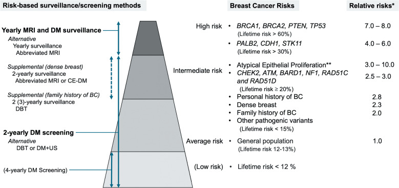
Tháp 4 tầng: nguy cơ cao (BRCA1/2, TP53, lifetime > 60%, RR 7–8) → trung bình (≥ 20%) → dân số (12–13%, RR 1,0) → thấp (< 12%). Cột phải: phương thức tầm soát tương ứng; chữ đậm = khuyến cáo hiện hành, chữ thường = đang nghiên cứu. Nguồn: Ohashi A et al., Magn Reson Med Sci 2025 (PMC12536305), CC BY 4.0.2. Mẫu hình + chẩn đoán phân biệt theo bối cảnh (gamut)
- Mẫu hình gốc: phụ nữ mang đột biến/tiền sử xạ ngực → tổn thương chỉ thấy trên MRI trong khi X-quang "bình thường", hoặc ngược lại chỉ thấy vi vôi hóa trên X-quang khi MRI chưa rõ.
- Ba câu hỏi gỡ rối trước khi gọi bệnh lý:
- Có phải mô nền (BPE) không? — ngấm nền lan tỏa, đối xứng, đổi theo chu kỳ; chụp ngày 7–14 vòng kinh.
- Tổn thương có "khối" hay "ngấm không khối (NME)"? — NME theo phân bố tuyến ống/vùng → nghĩ lan theo ống (DCIS, ung thư thể tiểu thùy).
- Có mốc cũ để so không? — ưu tiên so sánh với MRI lần trước hơn là đọc đơn độc.
- Gamut theo kiểu đột biến/nền tảng:
- BRCA1: ung thư hoại tử/hung tính, khối ngấm viền, không vôi hóa, dễ interval → DDx với u xơ–tuyến lành ngấm mạnh, viêm, BPE.
- BRCA2: DCIS với vi vôi hóa + NME → DDx với thay đổi xơ–tuyến, tăng sinh không điển hình, sẹo.
- Xạ ngực cũ: tổn thương hai bên, ngoài vùng xạ → DDx di căn phổi/hạch, hoại tử mỡ sau xạ, sarcoma do xạ (mạch máu).
- Vú đặc: phát hiện nhờ MRI/đối chiếu nhiều phương thức → tránh "bình thường" giả trên X-quang.
- Chẩn đoán phân biệt với ca "âm tính giả" trên MRI: vi vôi hóa DCIS (MRI có thể âm), loạn sản xơ, thay đổi sau mổ/xạ.
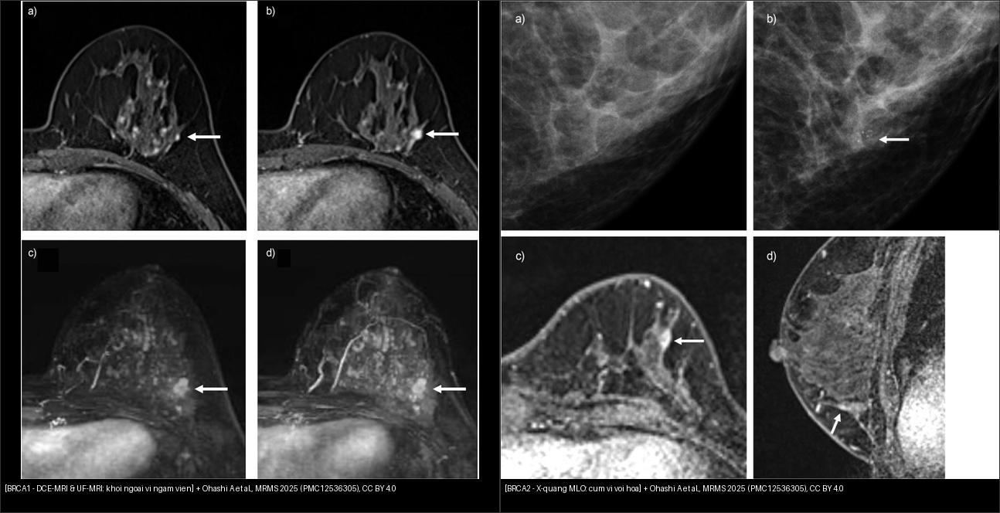
Trái — BRCA1: trên DCE-MRI (a, b, pha 2: khối ngấm viền) và UF DCE-MRI (c, d: thấy rõ ở thì sớm, ít BPE) → khối 8 mm, sau ra ung thư thể ống xâm lấn luminal B. Phải — BRCA2: X-quang MLO (a) bình thường 1 năm trước; (b) xuất hiện cụm vi vôi hóa góc ngoài–dưới; DCE-MRI (c, d) khối ngấm 5 mm → sinh thiết ra DCIS. Ảnh ghép letterbox giữ nguyên tỷ lệ. Nguồn: Ohashi A et al., MRMS 2025 (PMC12536305), CC BY 4.0.3. Bảng so sánh phân biệt (ma trận đối chiếu)
| Phương thức (entity) | Hình ảnh điển hình | Chốt vào (rule-in) | Chốt loại (rule-out) | Gợi ý xác nhận |
|---|---|---|---|---|
| DCE-MRI | Khối ngấm mạnh, ngấm viền (BRCA1/TNBC) hoặc NME theo ống (BRCA2/DCIS); thấy ở thì sớm | Nốt/NME tăng tín hiệu rõ sau tiêm, thấy rõ ở thì sớm, thay đổi so lần trước | BPE lan tỏa đối xứng, giảm sau tiêm theo chu kỳ → không gọi bệnh lý | So MRI cũ; chụp ngày 7–14 vòng kinh; sinh thiết định vị MRI |
| Mammography / DBT | Cụm vi vôi hóa (DCIS, BRCA2); khối bờ gai; hiệu ứng che lấp khi vú đặc | Vi vôi hóa mới/tăng số lượng thành cụm | Vú cực đặc + X-quang âm → chưa loại trừ, cần MRI | Đối chiếu 2 bình diện, DBT lát cắt; so phim cũ |
| Siêu âm (US) | Nốt giảm âm bờ không đều, có mạch; dẫn đường sinh thiết | Nốt đặc giảm âm + tăng mạch Doppler | Nang đơn thuần, thay đổi lành → không theo dõi dài | US đích theo MRI/X-quang; elastography |
| CEM / CE-DBT | Tăng tín hiệu sau thuốc cản quang, tương tự MRI về tăng sinh mạch | Ngấm cản quang trong tổn thương mới | Tăng ngấm sinh lý nền → đối chiếu MRI | Bổ sung khi MRI không sẵn có/quá tải |
| Abbreviated / UF MRI | Chỉ chuỗi xung tối giản (FAST ~3 phút) hoặc UF 1 phút | Se/Sp tương đương MRI đầy đủ cho khối ngấm rõ | Thiếu dữ liệu động học/DWI → bỏ sót tổn thương NME nhỏ | Chọn khi cần giảm tải/giảm chi phí |
- Bảng đối chiếu kiểu hình BRCA1 vs BRCA2 (chốt vào/loại theo hình ảnh):
| Đặc điểm | BRCA1 | BRCA2 | Chốt vào (rule-in) | Chốt loại (rule-out) |
|---|---|---|---|---|
| Thể mô học hay gặp | Thể ba âm (TNBC), độ cao | Luminal / DCIS | TNBC + khối ngấm viền → nghĩ BRCA1 | DCIS + cụm vi vôi hóa → nghĩ BRCA2 |
| X-quang | Thường khó thấy (không vôi hóa) | Thấy rõ vi vôi hóa | Vi vôi hóa cụm mới → BRCA2 | X-quang âm không loại trừ BRCA1 |
| MRI | Khối bờ rõ, ngấm viền, vùng sau | Khối gai hoặc NME | NME theo ống → lan đường ống/DCIS | Nốt ngấm viền đơn độc bờ đều → cân nhắc lành |
| Ung thư đối bên | ~ 40%/20 năm | ~ 26%/20 năm | MRI đối bên bắt buộc | Không bỏ qua vú bên kia dù bên kia thấy "bình thường" |
- Bảng phân tầng nguy cơ & khuyến cáo (EUSOBI/Eur Radiol 2024 + PMC12536305):
| Mức nguy cơ | Nguy cơ trọn đời / RR | Khuyến cáo tầm soát | Chốt vào (rule-in) | Chốt loại (rule-out) |
|---|---|---|---|---|
| Cao (BRCA1/2, TP53) | > 60%; RR 7–8 | MRI hằng năm từ ~25 tuổi; ± X-quang từ 35–40 tuổi | Đột biến BRCA1/2/TP53 → MRI hằng năm | Không dùng X-quang đơn độc |
| Trung bình–cao (PALB2, CDH1, STK11) | > 30%; RR 4–6 | Cân nhắc MRI + X-quang theo hướng dẫn | Lifetime ≥ 20% → xét MRI | Nguy cơ thấp → không MRI thường quy |
| Dân số (vú đặc) | 12–13%; vú đặc RR 2,3 | X-quang/DBT 40–50 → ~70 tuổi; vú cực đặc (D): MRI 2–3 năm/lần | BI-RADS mật độ C/D → bổ sung MRI/US | Mật độ A/B → không bổ sung |
| Xạ ngực tuổi trẻ (≥ 10 Gy) | nguy cơ cao theo liều/tuổi xạ | X-quang + MRI hằng năm, từ tuổi 25 hoặc 8 năm sau xạ (muộn hơn) | Tiền sử xạ ngực 10–30 tuổi → vào chương trình MRI | Không trì hoãn vì "còn trẻ" |
4. Protocol chụp + hệ phân độ/điểm chuẩn hóa
- Protocol MRI vú tầm soát: máy ≥ 1,5 T (ưu tiên 3 T), cuộn chuyên dụng vú; T2W + DWI/ADC (không cản quang) + T1W fat-sat trước tiêm + DCE T1W fat-sat sau tiêm thuốc gadolinium nhiều thì (thì sớm ~1 phút để bắt động học) + trừ ảnh (subtraction) + MIP; tư thế chụp hai vú. Ngày 7–14 vòng kinh (tiền mãn kinh) để giảm BPE.
- Protocol rút gọn (abbreviated/FAST): T1W trước tiêm + T1W sau tiêm đầu tiên + ảnh trừ + MIP → thời gian ~3 phút; Se 100%, Sp 94,3% (gần bằng protocol đầy đủ 93,9%, P = 0,563). Ultrafast (UF) ~1 phút lấy động học vài giây: meta 16 nghiên cứu cho Se 83%, Sp 77%, AUC 0,88 (PMC12536305).
- X-quang: DBT (tomosynthesis) ± tổng hợp 2D; X-quang "một mình" không đủ ở BRCA1.
- Hệ phân độ BI-RADS (dùng cho tầm soát):
- BI-RADS 1–2: âm tính/lành → tiếp tục tầm soát định kỳ.
- BI-RADS 3: có thể lành → theo dõi lại 6 tháng.
- BI-RADS 4–5: nghi ngờ/ác tính → sinh thiết xác nhận (4 chia 4A/4B/4C theo nguy cơ).
- Ngưỡng hành động then chốt: tổn thương mới hoặc to lên trên MRI so lần trước → nâng BI-RADS; NME và ngấm viền cần sinh thiết định vị; trong ca BRCA1, khối 8 mm ngấm viền to lên đã chuyển BI-RADS 4A.
- Giảm nguy cơ (định lượng): meta 15 nghiên cứu — cắt hai phần phụ dự phòng (RRSO): RR 0,55 (0,45–0,68); cắt tuyến vú dự phòng hai bên (RRM): RR 0,11 (0,04–0,32) nhưng RRM không giảm tỉ lệ tử vong chung. Theo dõi MRI: ở BRCA1, HR tử vong 0,20 (0,10–0,43); nguy cơ tử vong tích lũy tới 75 tuổi 5,5% (có MRI) vs 20,5% (không MRI) (PMC12536305).
flowchart TD
A[Phu nu co yeu to nguy co: dot bien, tien su xa nguc, vu dac] --> B{Nguy co tron doi?}
B -->|LTR > 20% hoac BRCA/TP53/PALB2| C[MRI vu hang nam tu ~25 tuoi]
B -->|Trung binh dan so| D[X-quang/DBT 40-50 -> ~70 tuoi]
C --> E[+/- X-quang tu 35-40 tuoi]
C --> F{Ket qua MRI}
F -->|BI-RADS 1-2| C
F -->|BI-RADS 3| G[Theo doi lai 6 thang]
F -->|BI-RADS 4-5| H[Sinh thiet dinh vi MRI]
H -->|Ac tinh| I[Dieu tri + danh gia vu doi ben]
H -->|Lanh| C
D --> J{MID mat do BI-RADS}
J -->|A-B| D
J -->|C-D| K[Bo sung US va/hoac MRI; D: MRI 2-3 nam/lan]
A -.-> L{Xa nguc 10-30 tuoi, >= 10 Gy?}
L -->|Co| M[X-quang + MRI hang nam tu tuoi 25 hoac 8 nam sau xa]
A -.-> N[Giam nguy co: RRM RR 0,11 / RRSO RR 0,55 / hoa du phong]
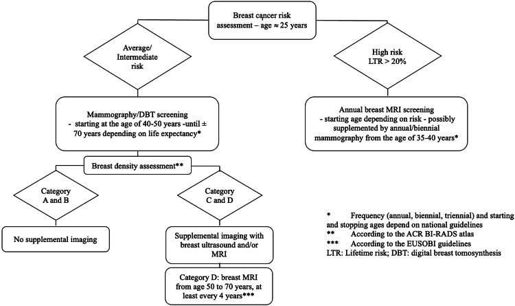
Đánh giá nguy cơ ở ~25 tuổi. Trung bình/trung bình–cao: X-quang/DBT từ 40–50 đến ~70 tuổi; đánh giá mật độ, C/D thì bổ sung. Nguy cơ cao (lifetime > 20%): MRI hằng năm, tùy hướng dẫn, ± X-quang hằng năm/2 năm từ 35–40 tuổi. Nguồn: Marcon M et al., Eur Radiol 2024 (PMC11399176), CC BY 4.0.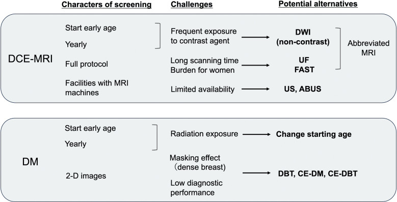
*Trái: DCE-MRI — phơi nhiễm thuốc cản quang hằng năm, thời gian chụp dài, hạn chế máy → DWI (không cản quang), UF/FAST, abbreviated MRI, US/ABUS. Phải: X-quang (DM) — phơi nhiễm tia xạ, che lấp ở vú đặc, hiệu năng chẩn đoán thấp → đổi tuổi bắt đầu, DBT/CE-DM/CE-DBT. Nguồn: Ohashi A et al., MRMS 2025 (PMC12536305), CC BY 4.0.*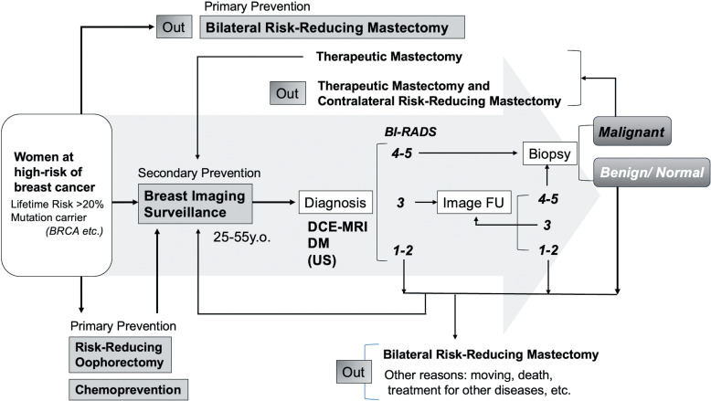
Dự phòng bậc 1 (cắt tuyến vú dự phòng hai bên, RRSO, hóa dự phòng) + bậc 2 (giám sát hình ảnh: DCE-MRI + DM, 25–55 tuổi) → chẩn đoán → phân loại BI-RADS → sinh thiết → lành/ác. Nguồn: Ohashi A et al., MRMS 2025 (PMC12536305), CC BY 4.0.5. Biến thể bình thường và cạm bẫy
- Tăng ngấm mô tuyến nền (background parenchymal enhancement — BPE): ngấm nền lan tỏa, đối xứng, theo chu kỳ (mạnh ở tiền mãn kinh, giảm sau mãn kinh). Tránh: chụp ngày 7–14 vòng kinh; dùng thì sớm/UF để giảm nhiễu BPE; so lần trước.
- Vú đặc che lấp (masking): X-quang có thể âm tính giả khi vú cực đặc → đúng ngưỡng hướng dẫn: mật độ C/D mới bổ sung, D cân nhắc MRI 2–3 năm/lần.
- Thay đổi sau mổ/xạ: hoại tử mỡ, sẹo co kéo, tụ dịch, u hạt vị trí vết mổ — ngấm viền giả u, dễ nhầm tái phát → so phim cũ + MRI đa thì; sinh thiết khi nghi ngờ thật.
- Vi vôi hóa DCIS có thể "âm tính" trên MRI: đừng yên tâm khi MRI bình thường mà bỏ qua cụm vi vôi hóa mới trên X-quang (đặc biệt BRCA2) — hai phương thức bù trừ cho nhau.
- Bỏ sót vú đối bên: vì đối bên 20 năm tới 40% (BRCA1)/26% (BRCA2) — luôn đọc cả hai vú và sinh thiết tổn thương đối bên mới.
- Cạm bẫy mặt cắt/hình chiếu: khác biệt kích thước vú trên ảnh có thể chỉ do tư thế/đè ép khi chụp, không phải giải phẫu (PMC13565922) → đừng chẩn đoán "teo/thay đổi" vô cớ.
- Tuân thủ/tâm lý: nhiều người chụp ngoài khung > 12 tháng hoặc bỏ dở; cần tư vấn chia sẻ quyết định (shared decision-making) và nhắc lịch chủ động.
- Không bỏ sót ca "đối bên" nếu chỉ đọc X-quang: nhớ ngưỡng X-quang đơn độc không đủ ở BRCA1.
6. Tự lượng giá — Blind Quiz ngay trên trang tĩnh
Ca 1 — Nữ 52 tuổi mang đột biến BRCA2, đã cắt vú bảo tồn phải 14 năm trước; X-quang hằng năm. Nhìn ảnh, mô tả trước.
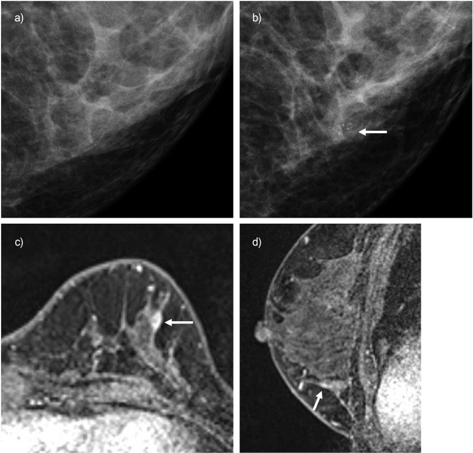
- Gợi ý lâm sàng (clinical context): BRCA2; X-quang 1 năm trước "bình thường".
- Câu hỏi: Dấu hiệu mới trên X-quang là gì? MRI bổ sung thêm gì? Chẩn đoán khả dĩ?
Bấm để hiện đáp án (findings + chẩn đoán)
- Dấu hiệu (findings): X-quang MLO 1 năm trước (a) bình thường; lần này (b) có cụm vi vôi hóa mới ở góc ngoài–dưới (mũi tên). DCE-MRI axial (c) và sagittal (d) phát hiện khối ngấm 5 mm, BI-RADS 4A.
- Chẩn đoán (diagnosis): DCIS (sinh thiết) — chẩn đoán 22 năm sau ca ung thư đầu tiên. Vì sao BRCA2 hay lộ vi vôi hóa/DCIS: thể luminal–DCIS tạo canxi hóa trong ống → X-quang là "cửa sổ" quan trọng dù MRI cũng dương.
- Nguồn ảnh: Ohashi A et al., Magn Reson Med Sci 2025 (PMC12536305), Fig. 3, CC BY 4.0.
Ca 2 — Nữ 44 tuổi mang đột biến BRCA1, X-quang "bình thường" nhưng MRI bất thường. Nhìn ảnh, mô tả trước.
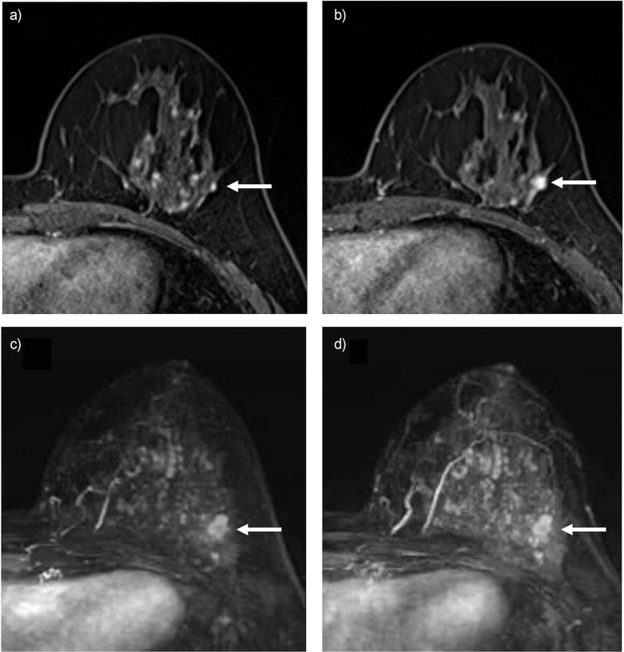
- Gợi ý lâm sàng: BRCA1; X-quang 1 năm trước đọc "bình thường".
- Câu hỏi: Tổn thương nằm ở đâu, kích thước và kiểu ngấm? Vì sao X-quang âm mà bệnh vẫn có? UF giúp gì?
Bấm để hiện đáp án (findings + chẩn đoán)
- Dấu hiệu (findings): DCE-MRI pha 2 (a, b) — khối ngấm 8 mm ở vùng ngoài–dưới vú trái, ngấm viền, to lên so lần trước → BI-RADS 4A. UF DCE-MRI (c, d) thấy tổn thương ở thì sớm với ít BPE giúp định vị rõ.
- Chẩn đoán (diagnosis): ung thư thể ống xâm lấn typ luminal B — chẩn đoán 10 năm sau ca ung thư đầu tiên. Vì sao X-quang âm: BRCA1 thường không vi vôi hóa và vú đặc che lấp → cần MRI.
- Nguồn ảnh: Ohashi A et al., Magn Reson Med Sci 2025 (PMC12536305), Fig. 5, CC BY 4.0.
Ca 3 — So sánh bên nào là BRCA1, bên nào là BRCA2?
- Gợi ý: một người bệnh lộ diện bằng vi vôi hóa trên X-quang; một người lộ bằng khối ngấm viền trên MRI.
- Câu hỏi: Dấu hiệu nào chỉ đúng kiểu đột biến? Vì sao cần cả hai phương thức?
Bấm để hiện đáp án (findings + chẩn đoán)
- Trái: BRCA1 — khối ngấm viền trên DCE-MRI/UF DCE-MRI, không vi vôi hóa (TNBC-like). Phải: BRCA2 — cụm vi vôi hóa trên X-quang (DCIS), MRI thêm khối ngấm 5 mm.
- Chốt (clincher): ngấm viền + X-quang âm → nghi BRCA1; vi vôi hóa cụm mới → nghi BRCA2/DCIS. Vì hai kiểu hình bù trừ, tầm soát phối hợp MRI + X-quang mới đủ.
- Nguồn ảnh: ghép Fig. 5 + Fig. 3 của Ohashi A et al., MRMS 2025 (PMC12536305), CC BY 4.0 (ghép letterbox, giữ nguyên tỷ lệ).
Ca 4 — Nữ 46 tuổi sống sót sau sarcoma Ewing có xạ ngực; X-quang để sàng lọc.
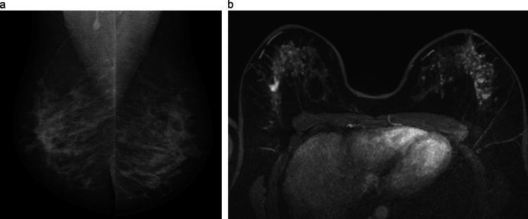
- Gợi ý: đã xạ ngực vì ung thư tuổi trẻ; X-quang (a) đọc là "bình thường".
- Câu hỏi: Vì sao nhóm này phải tầm soát cả MRI? Trong ảnh, phương thức nào phát hiện bất thường hai bên?
Bấm để hiện đáp án (findings + chẩn đoán)
- Dấu hiệu (findings): X-quang MLO (a) không thấy tổn thương rõ; CE-MRI (b) thấy bất thường hai vú.
- Chẩn đoán/lý giải: ung thư vú sau xạ ngực (chest-radiation–associated). Ngưỡng: xạ ngực lúc 10–30 tuổi, tiềm tàng ~8 năm → COG khuyến cáo X-quang + MRI hằng năm từ tuổi 25 hoặc 8 năm sau xạ (muộn hơn) với người xạ ngực ≥ 10 Gy; ưu tiên MRI vì cần hạn chế tia xạ.
- Nguồn ảnh: Marcon M et al., Eur Radiol 2024 (PMC11399176), Fig. 4, CC BY 4.0.
Ca 5 — Nữ 62 tuổi mang đột biến BRCA2, đã cắt vú bảo tồn + xạ phải 10 năm trước. X-quang tầm soát nguy cơ cao và mô hình nguy cơ AI.
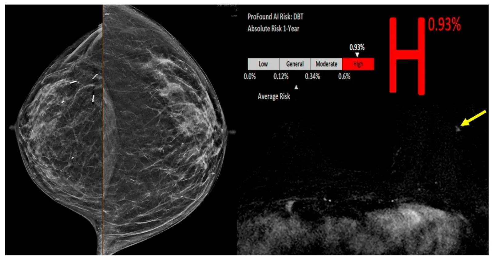
- Gợi ý: tiền sử IDC phải (ER+/PR+) 10 năm; đang tầm soát nguy cơ cao.
- Câu hỏi: X-quang chỉ ra gì đối với vú phải đã cắt bảo tồn? Cần làm gì tiếp cho vú còn lại dù X-quang "chưa thấy u"?
Bấm để hiện đáp án (findings + chẩn đoán)
- Dấu hiệu (findings): X-quang CC (trái ảnh) — vú phải đặc không đồng nhất với thay đổi do cắt bảo tồn/xạ, BI-RADS 2; mô hình AI xếp nguy cơ cao (0,93%). MRI tầm soát 6 tháng sau thấy ổ ngấm không khối (NME) khu trú vú trái (mũi tên vàng) = BI-RADS 4.
- Chẩn đoán (diagnosis): DCIS vú đối bên (u nguyên phát đối bên mới) — sinh thiết định vị MRI. Bài học: đừng dừng ở "BI-RADS 2" khi nguy cơ cao; MRI toàn hai vú là bước quyết định.
- Nguồn ảnh: Ogunlade SB et al., J Clin Med 2026 (PMC13565922), Fig. 2, CC BY.
Ca 6 — Nữ 67 tuổi mang BRCA2, 17 năm sau ca ung thư vú phải đã điều trị, MRI thì trước mổ cho bất thường vú phải. Chuyện gì đang xảy ra?
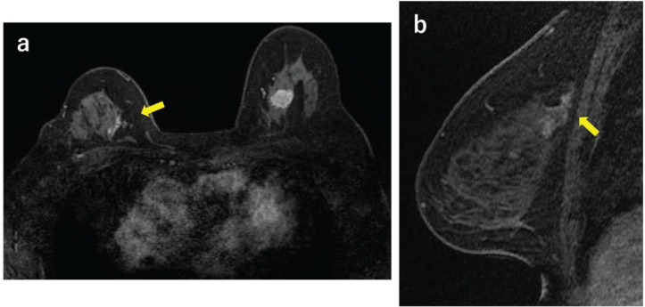
- Gợi ý: tiền sử ung thư vú phải + xạ; theo dõi nguy cơ cao.
- Câu hỏi: Ổ bất thường bên phải là tổn thương mới/đối bên hay trong vú đã bảo tồn? Mô tả kiểu ngấm và sinh thiết thế nào?
Bấm để hiện đáp án (findings + chẩn đoán)
- Dấu hiệu (findings): MRI thì trước mổ — ngấm không khối (NME) dạng nhánh (branching) ở vùng trong–trên vú phải (a) và vùng tổn thương (b), BI-RADS 4.
- Chẩn đoán (diagnosis): tái phát trong vú đã bảo tồn phải — sinh thiết định vị MRI ra ung thư thể ống xâm lấn thể ba âm (TNBC); điều trị hóa trị trước mổ rồi mổ hai bên. Chốt: NME dạng nhánh mới trong vú đã xạ/mổ = phải loại trừ tái phát/di chứng ác bằng sinh thiết định vị.
- Nguồn ảnh: Nagata A et al., Eur J Breast Health 2026 (PMC13011143), Fig. 2, CC BY-NC-ND (nguyên bản, không crop/ghép).
Ca 7 — Nguy cơ ung thư vú theo trạng thái đột biến. Đọc biểu đồ và nêu ý nghĩa quản lý.
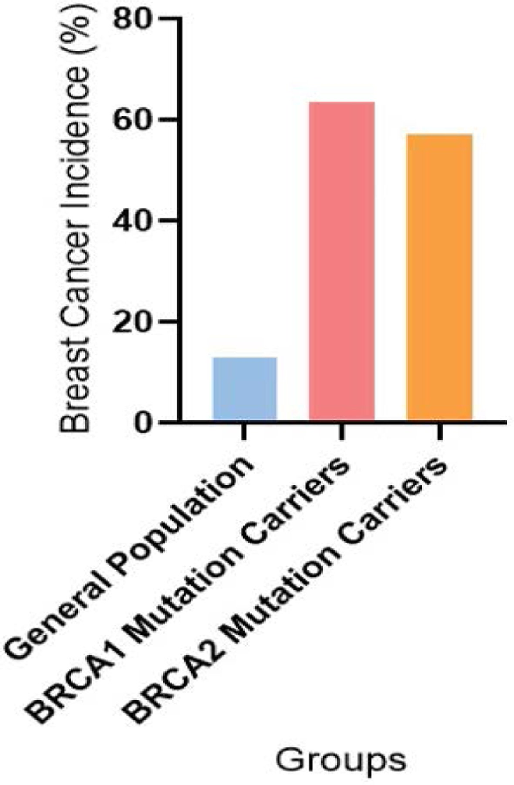
- Gợi ý: ba nhóm dân số, BRCA1 và BRCA2.
- Câu hỏi: Nhóm nào cao nhất? Điều này lý giải vì sao cần tầm soát MRI từ tuổi ~25 và cắt hai phần phụ dự phòng cân nhắc riêng?
Bấm để hiện đáp án
- Dấu hiệu: cột tần suất ung thư vú — dân số chung ~10–12%, BRCA1 ~62%, BRCA2 ~56%.
- Chẩn đoán/lý giải: nguy cơ trọn đời rất cao → MRI hằng năm từ ~25 tuổi; RRSO giảm nguy cơ RR 0,55, RRM RR 0,11 nhưng không giảm tử vong chung → quyết định cá thể hóa + tư vấn chia sẻ.
- Nguồn ảnh: Najafi N et al., J Cancer Sci Clin Ther 2025 (PMC12802875), Fig. 3, CC BY.
Ca 8 — Tuân thủ tầm soát trong đoàn hệ BRCA1/2.
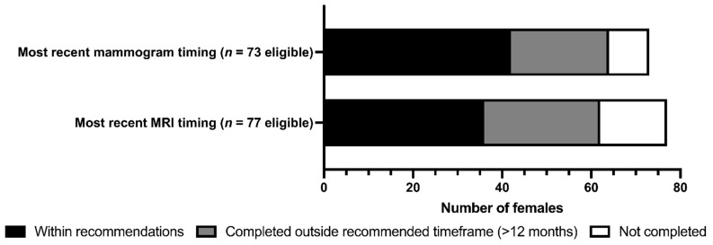
- Gợi ý: biểu đồ cột đen/xám/trắng cho thời điểm chụp gần nhất.
- Câu hỏi: Vì sao tuân thủ là mắt xích quyết định hiệu quả của một chương trình tầm soát nguy cơ cao?
Bấm để hiện đáp án
- Dấu hiệu: số người trong khung khuyến cáo (đen) < tổng số; nhiều người chụp ngoài khung > 12 tháng (xám) hoặc chưa hoàn thành (trắng).
- Chẩn đoán/lý giải: hiệu quả tầm soát gắn với làm đều; cần nhắc lịch, tư vấn chia sẻ quyết định, giảm rào cản xã hội (thu nhập/học vấn liên quan tới tỉ lệ tham gia) — nếu không, ung thư khoảng tăng.
- Nguồn ảnh: Roebothan A et al., Curr Oncol 2023 (PMC10605144), Fig. 3, CC BY.
Ca 9 — Vú rất đặc trên X-quang: có bỏ qua được không?
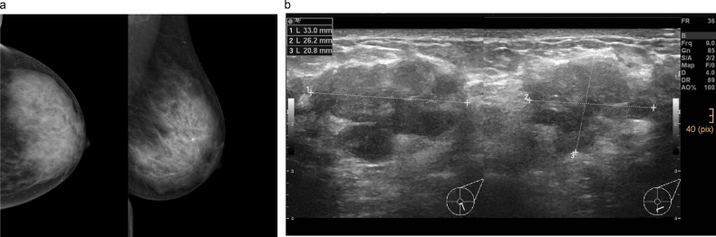
- Gợi ý: phụ nữ 45 tuổi lần đầu tầm soát, mô tuyến rất đặc.
- Câu hỏi: Mật độ ảnh hưởng thế nào tới khả năng phát hiện? Ngưỡng xử trí theo mật độ?
Bấm để hiện đáp án (findings + chẩn đoán)
- Dấu hiệu (findings): vú cực đặc (BI-RADS mật độ D) trên CC + MLO — mô xơ–tuyến dày che lấp.
- Chẩn đoán/lý giải: hiệu ứng che lấp (masking) → X-quang dễ âm tính giả. Ngưỡng: mật độ C/D → bổ sung US và/hoặc MRI; mật độ D → MRI 2–3 năm/lần (EUSOBI, bằng chứng mức I). Mật độ A/B → không bổ sung.
- Nguồn ảnh: Marcon M et al., Eur Radiol 2024 (PMC11399176), Fig. 2, CC BY 4.0.
Bài liên quan chéo
- 500 – Tổng quan Hệ Vú & Sản Phụ khoa
- 510 – Vú BI-RADS (nhũ ảnh, siêu âm, MRI)
- 512 – Vi vôi hóa, biến dạng cấu trúc, túi ngực
- 514 – Ung thư vú: TNM & MRI đánh giá lan rộng
- 517 – Sinh thiết định vị vú & quản lý clip/kẹp
- 199 – Quy trình xét nghiệm gen & tầm soát gia đình (WB-MRI)
Ảnh
- 12 ảnh gốc (CC BY 4.0 ×8, CC BY ×3, CC BY-NC-ND ×1) + 1 ảnh ghép (CC BY 4.0 kế thừa). Nguồn + giấy phép từng ảnh trong
images/CREDITS.md. - Ảnh CC BY-NC-ND (Nagata A et al.) giữ nguyên bản, không crop/ghép. Ảnh ghép dùng
tools/make_composite.py(letterbox nền đen, giữ nguyên tỷ lệ).
Không dùng để chẩn đoán độc lập khi chưa có người hướng dẫn.